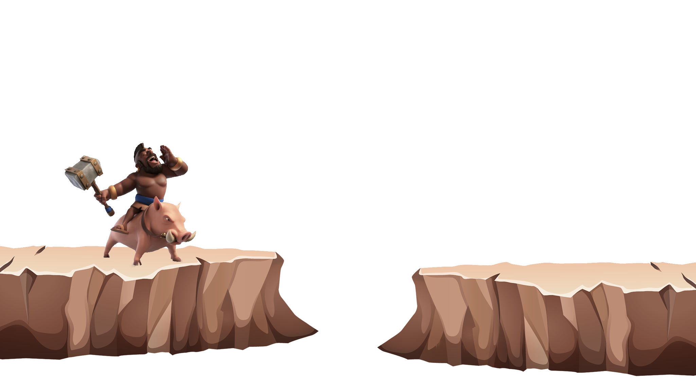
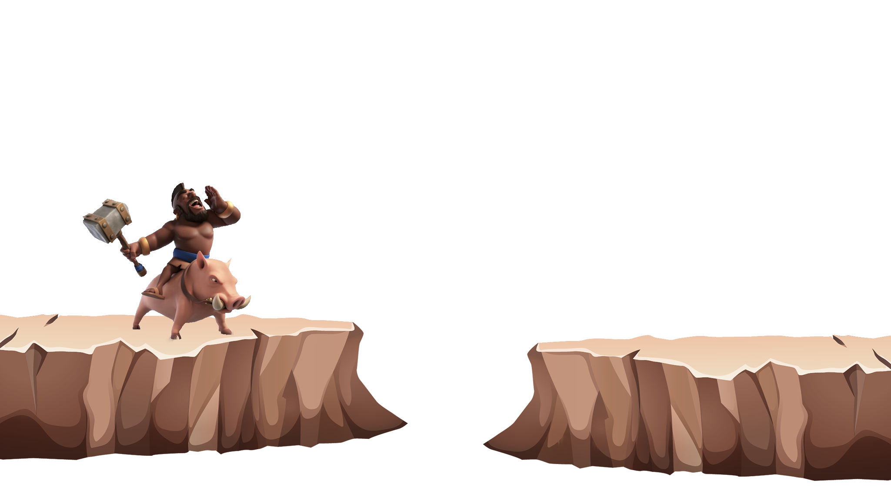

Przeglądaj

Przeglądaj


Co to za gra?
Clash of Clans to społecznościowa gra strategiczna w realiach fantasy. Zabawa sprowadza się do rozwijania własnej osady i wykreowania silnej armii, która pozwoli nam zdobywać wioski przeciwnika i odpierać ataki wrogów.
PomińDla ciekawskich:
Zabawa w Clash of Clans polega na zbudowaniu bazy, czy też może raczej osady, którą będziemy cały czas rozwijać i bronić przed napastnikami. Trzeba więc postawić ratusz, kopalnię złota, koszary itd. Wszystko po to, by móc w późniejszym czasie budować wieże strażnicze, stawiać mury oraz produkować nowe jednostki, które wykorzystujemy do nacierania na bazy innych osób. O ile bowiem w grze jest możliwość mierzenia się ze sztuczną inteligencją, tak rozgrywka przeznaczona jest przede wszystkim do zmagań w multiplayrze.
Całość jest bardzo prosta do opanowania, więc przygodę z Clash of Clans mogą rozpocząć również osoby, które do tej pory unikały strategii niczym ognia. Dodatkowo wspomniane rozgrywki z SI świetnie sprawdzają się jako trening przed starciami z żywymi przeciwnikami. Samo sterowanie natomiast sprowadza się do stukania palcem w ekran w wybrane miejsca, dzięki czemu budujemy i przywołujemy jednostki, a cała reszta odbywa się samoczynnie.
Mechanika zabawy nie wykorzystuje systemu energii, znanego z wielu innych darmowych gier mobilnych. W związku z tym nie jesteśmy ograniczani przez życia, ale z drugiej strony podobny efekt uzyskano przez wirtualne waluty. Ich brak skutecznie może powstrzymać nas przed podjęciem kolejnego zadania, więc decydując się na Clash of Clans należy wiedzieć, że darmowa rozrywka po kilku godzinach zabawy zaczyna się robić mozolna i wymaga cierpliwości podczas ciułania wirtualnego złota.
Clash of Clans, choć nie zaskakuje właściwie niczym, jest bardzo dobrą pozycją dla miłośników gier wideo. Aplikacja jest prosta, ale oferuje mnóstwo odblokowywanych z biegiem czasu elementów oraz wymusza stosowanie pewnych taktyk podczas przywoływania swoich podwładnych czy stawiania budowli. Pozwala walczyć z SI i z innymi graczami, ale też zawierać z nimi sojusze. Do tego jest darmowa i choć w późniejszym czasie system mikropłatności robi się nieco uciążliwy, to i tak warto dać jej szansę, tak jak zrobiły to miliony innych osób.